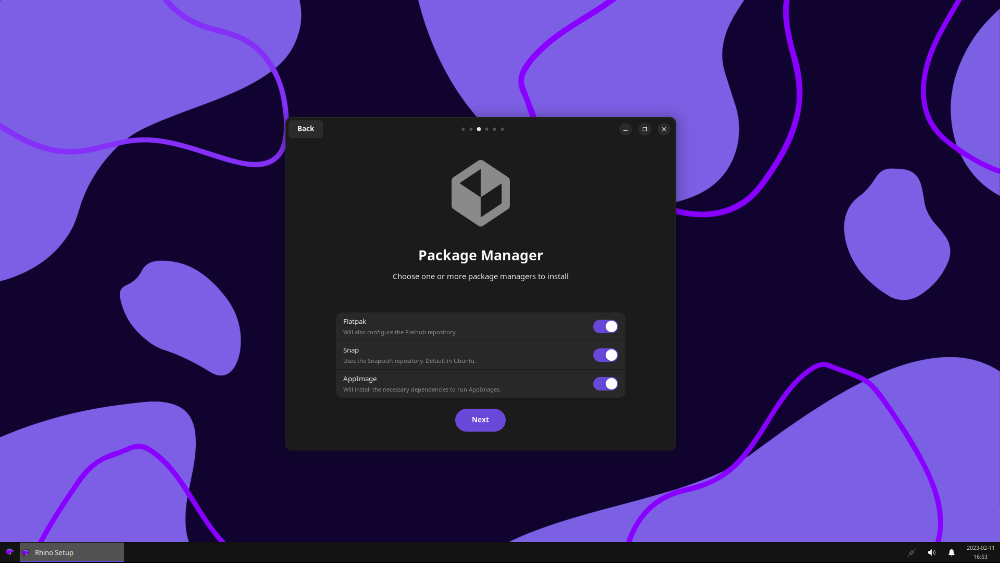

The state of Rhino Linux - Development update #1
Rhino Linux has now been in active development since October 2022. The core vision for the distribution has remained the same throughout the development cycle. Many things have changed since our original announcement detailing the development of the distribution, though.
Unfortunately, the original goal of releasing the distribution in March 2023 is not attainable. We underestimated the scale of development, and have since scaled up by adding new contributors to our development team. Our new aim is to try to release in Summer 2023, however we cannot guarantee that this will be successful. Rhino Linux is due to officially enter open beta within the next two weeks.
• Upon reviewing the development of Rhino Linux, we are set to enter open beta shortly. A release date for March is achievable providing that no major issues are reported during our testing phase. The release date will be set after careful consideration before we enter open beta.
Branding
We have changed our logo and proposed default wallpaper in the development cycle. u/oklopfer has joined the team as a designer, and more recently a developer of the distribution. They have redesigned the logo and designed 6 default wallpapers for Rhino Linux users to utilise, including our brand new default wallpaper.

Website
The website has undergone heavy development. Unfortunately, with Max (the website lead developer) leaving the development team, the website has now been under development by http.llamaz, Project Lead, along with community contributors. The website is essentially now complete. After this work will begin on the Wiki, which is using Jekyll and GitHub pages.
Pacstall
Pacstall is the core feature of the distribution, handling everything from kernel installs, web browser, dotfiles and our plymouth theme. The decision has been taken to remove XFCE from being utilised as a pacscript due to the sheer amount of maintenance it will require for our limited development team size.
All Rhino Linux related packages are packaged as a pacscript. When system updates that relate to Rhino Linux need to be applied, they will be done so through Pacstall.
We have also taken the decision to work with upstream Pacstall more closely. Rather than maintaining our own version of Pacstall’s package repository, we will be contributing straight to Pacstall’s package repo, and our pacscripts will be hosted there as a result of this.
User Interface and Experience
The default user interface utilises a conventional desktop layout, with a taskbar at the bottom and desktop icons enabled. With XFCE being our desktop environment the system utilises little resources on idle.
User Experience is something we take pride in. We have created rhino-setup, a graphical application that will appear upon booting your OS for the first time. It will give users an option to install useful software or additional package managers.
We have created rhino-pkg, a wrapper for APT, Pacstall, Flatpak and Snap so that you can install the software you want, easily. It will also update all of your packages in a single command.
Installer
The installer has gone through a lot of hard work. We utilise Calamares as our default installer. We have created a custom image slideshow, showing the best features of Rhino Linux.
Release cycle
Originally with Rolling Rhino Remix, the predecessor of Rhino Linux, we released a new disk image monthly. The original idea for Rhino Linux was to do it quarterly, with 4 total disk image releases per year. This is not maintainable for a rolling release distribution as it will need more consistent patches. Rather we will not have a fixed schedule for when we package and distribute a new disk image, this will come as and when critical changes or updates are made to the system and when the time and resources are available.
• Disk image releases will be identified with YEAR.PATCH, an example of this will be 2023.19.
Thank you
Thanks to all of our developers and supporters. Your contributions and support make Rhino Linux possible. If you would like to help improve Rhino Linux please don't hesitate to contact us and get involved.